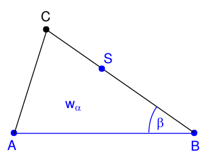
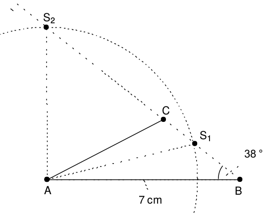
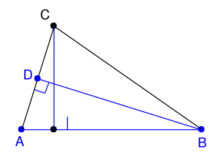
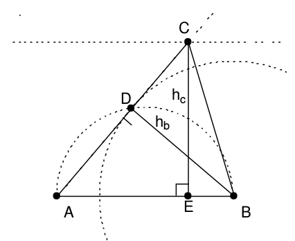

Aufgabe 1.6
- Von einem Dreieck sind die Grundseite $\overline{AB}=7\;\text{cm}$, die Winkelhalbierende $w_\alpha=5.5\;\text{cm}$ und der Winkel $\beta=38^\circ$ bekannt. Man konstruiere das Dreieck.
- Von einem Dreieck sind die Grundseite $\overline{AB}=7\;\text{cm}$, die Höhe $h_b=3.5\;\text{cm}$ und die Höhe $h_c=4\;\text{cm}$ bekannt. Man konstruiere das Dreieck.
- Fertigen Sie für jede Aufgabe eine Planfigur an
- Identifizieren Sie Teildreiecke, die sich aus den gegebenen Stücken konstruieren lassen
- Überlegen Sie, welche Hilfskonstruktionen (Thaleskreis, Parallelen) nützlich sein könnten
- Beachten Sie mögliche Mehrdeutigkeiten in der Konstruktion
Grundlegende Strategie: Leitidee ist stets die Analyse der jeweiligen Planfigur: Welches Teildreieck lässt sich aus den gegebenen Stücken konstruieren?
- $\overline{AB}=7\;\text{cm},\; w_\alpha=5.5\;\text{cm},\;\beta=38^\circ$
Planfigur

Strategische Überlegung: Das Teildreieck $ABS$ (mit $S$ als Schnittpunkt der Winkelhalbierenden mit der Seite $BC$) lässt sich konstruieren, allerdings nicht eindeutig. Daraus lässt sich dann das vollständige Dreieck $ABC$ konstruieren.Konstruktion
- $\overline{AB}=7$ cm zeichnen.
- $\beta=38^\circ$ in $B$ antragen.
- Kreis um $A$ mit $r=5.5$ cm schneidet den freien Schenkel von $\beta$ in $S_1$ (und $S_2$).
- $AB$ an $w_\alpha$ spiegeln: Dies ergibt $AB'$.
- $C$ ist der Schnittpunkt von $AB'$ und $BS$.

Hinweis: Es gibt zwei mögliche Lösungen aufgrund der zwei Schnittpunkte $S_1$ und $S_2$.
- $\overline{AB}=7\;\text{cm},\; h_b=3.5\;\text{cm},\;h_c=4\;\text{cm}$
Planfigur

Strategische Überlegung: Das Teildreieck $ABD$ (mit $D$ als Höhenfusspunkt von $h_b$) kann aus SSW konstruiert werden. Der Thaleskreis hilft, den rechten Winkel bei $D$ zu gewährleisten.Konstruktion
- $\overline{AB}=7$ cm zeichnen.
- Thaleskreis über $AB$ konstruieren.
- Kreis um $B$ mit $r=3.5$ cm schneidet den Thaleskreis in $D$ (zwei Lösungen möglich).
- Parallele zu $AB$ im Abstand $h_c = 4$ cm konstruieren.
- Gerade durch $A$ und $D$ schneidet die Parallele im gesuchten Punkt $C$.

Hinweis: Die Konstruktion nutzt geschickt die Eigenschaft, dass $D$ auf dem Thaleskreis liegen muss, da $\angle ADB = 90°$.
Im Video: Etappe 6 · Winkelsumme im Dreieck bei 5:34